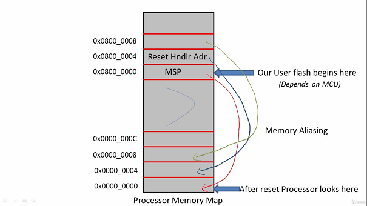
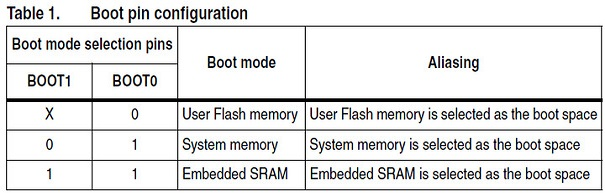
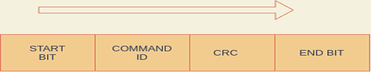
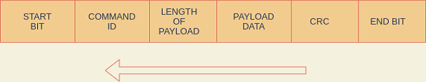

Hello Everyone!
I hope most of the embedded enthusiast might know that micro-controllers needs some mechanism to run the user application, otherwise applying power to it,
will only start ticking the internal system clock which is of no use. Micro-controller must be able to run the user program.
This can be achieved by using an external programmer or an user programmed code that is stored in the MCU Flash memory or ROM memory called Bootloader.
Bootloader is a user programmed code that will load our user application into the flash memory/ROM memory over serial peripheral like USART,CAN,SPI,I2C,USB,etc .
Some of the micro-controllers like STM32, Texas Instruments already have a bootloader stored in their ROM Memory but it is not configured since it uses In-Circuit Debugger.
For eg. STM uses ST link in-circuit debugger.
In this article I'll be discussing about certain topics required to start designing our own Custom Bootloader for STM32(ARM Cortex-M Processors).
ARM Cortex-M Register Set The ARM Cortex-M Processors has 16 internal registers. Out of which R0-R12 are general purpose registers and rest are special function registers. Stack Pointer[R13] : It is a pointer that points to the top of the stack. Link Register[R14] : It stores the value of PC when function is called or interrupt occurs. Program Counter[R15] : It stores the address of the next instruction to be fetched.
Whenever we boot our ARM Cortex-M Processors or reset, it internally performs following procedure that is ideally known as Startup Code. 1. Initially Program Counter loads the address 0x0000_0000. 2. The processor initializes the main stack pointer with the value at address 0x0000_0000. 3. After every instruction execution, Program Counter value automatically increases by 4(For 32-bit processors core) i.e 0x0000 0004. 4. The value at 0x0000_0004 is the address of the reset handler. 5. Then, PC jumps to the reset handler from which main function is called.
Boot Memory Area: By default, the STM32 boots from the flash memory of the controller. This is because the address 0x0000_0000 is the mapped with the base address of flash memory i.e 0x8000_0000. This technique is implemented by the microcontroller manufacturer in which the addresses are linked together also known as "Memory Aliasing".

Boot Configurations It is possible to boot from another memories by changing the boot configurations pins. When we change the configurations pins, the base address of that particular memory would be mapped to 0x0000_00000. This is how we achieve booting from different memory addresses.

Custom Bootloader ST has ROM of only 30KB and has placed their bootloader in System Memory/ROM. Therefore it would be ideal to store our Custom Bootloader in the Flash Memory of the controller. The communication between the PC and Custom Bootloader is possible with the help of serial communication such as USART,CAN,SPI,I2C,USB,etc.
Frame Format
The design of the frame format for communication between Host PC and Bootloader can be defined by the user.
One can follow following frame format :-
From PC to Custom Bootloader :

From Custom Bootloader to PC :

It should support following functions :-
1. Read the version of the Custom Bootloader.
2. Read the Chip Identification number of the Custom Bootloader.
3. Read the Protection level of Flash Memory of the Flash Memory.
4. Write the user application at the particular address of the Flash Memory.
5. Erase the particular/multiple memory location or mass erase the Flash Memory.
6. Read the user data from the particular memory location of the Flash Memory.
7. Set the Protection level on the sectors of the Flash Memory.
I hope it covers most of the basic concepts required to start designing our own custom bootloader for the STM32 Microcontroller.
References :
1. STM32 microcontroller system memory boot mode.
https://www.st.com/resource/en/application_note/cd00167594-stm32-microcontroller-system-memory-boot-mode-stmicroelectronics.pdf
2. STM32 Reference Manual
https://www.st.com/resource/en/reference_manual/dm00031020-stm32f405-415-stm32f407-417-stm32f427-437-and-stm32f429-439-advanced-arm-based-32-bit-mcus-stmicroelectronics.pdf
3. STM32Fx Microcontroller Custom Bootloader Development
https://www.udemy.com/course/stm32f4-arm-cortex-mx-custom-bootloader-development/